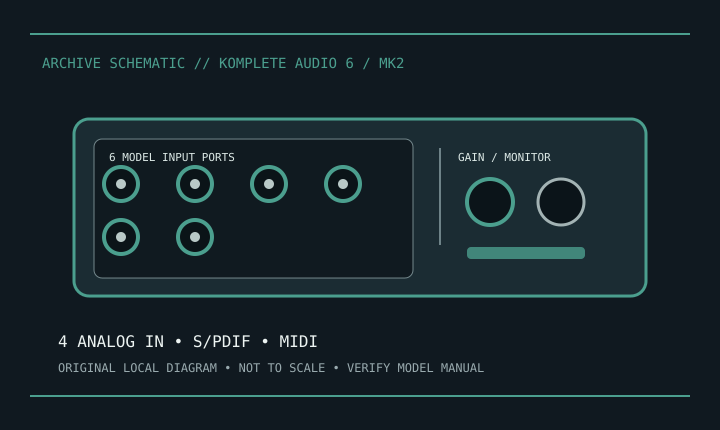

[ INDIVIDUAL COMPONENT // SOUND HARDWARE ]
Native Instruments KOMPLETE AUDIO 6 MK2
KOMPLETE AUDIO 6 MK2 is the second-generation USB interface; do not conflate it with the original KOMPLETE AUDIO 6 or later product family.

Model-specific specifications
| Product | Native Instruments KOMPLETE AUDIO 6 MK2; verify MK2 marking. |
|---|---|
| Host | USB 2.0 computer interface. |
| Analog I/O | Two XLR/TRS combo mic/line inputs with instrument capability, plus two balanced line inputs; four balanced 1/4-inch line outputs and two headphone outputs. |
| Digital/MIDI | Coaxial S/PDIF stereo input/output and 5-pin DIN MIDI input/output. |
| Conversion | Manufacturer documentation specifies up to 24-bit/192 kHz operation; achievable format depends on host driver and digital I/O mode. |
| Preamps/power | Two mic preamps with switchable 48 V phantom power. It is USB bus-powered; respect host current limits. |
| Drivers/OS | Use Native Instruments model-specific driver and operating-system support listing; current support can differ from the original MK1. |
Compatibility & preservation
Identify MK2 before driver installation and preserve the NI driver/control software and configuration. Label coaxial digital clocking and S/PDIF cables. Turn phantom off before re-patching microphones and use an adequately powered USB port.
- Photograph the model/revision label, connector panel, and installed/bundled accessories before service.
- Retain manufacturer manuals, original driver/firmware packages, and known-working configuration notes with the hardware.
- Use the specified signal level, connector wiring, and power requirements; connector fit alone does not prove compatibility.
Manufacturer sources
- Native Instruments — KOMPLETE AUDIO 6Manufacturer product and MK2 documentation.
- Native Instruments — Downloads and supportManufacturer software/driver and OS support archive; select MK2-specific package.